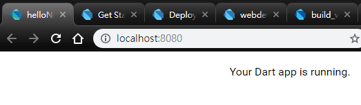
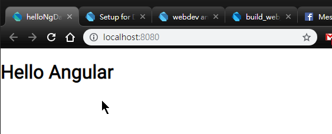
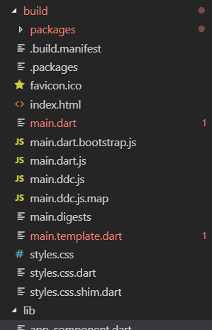
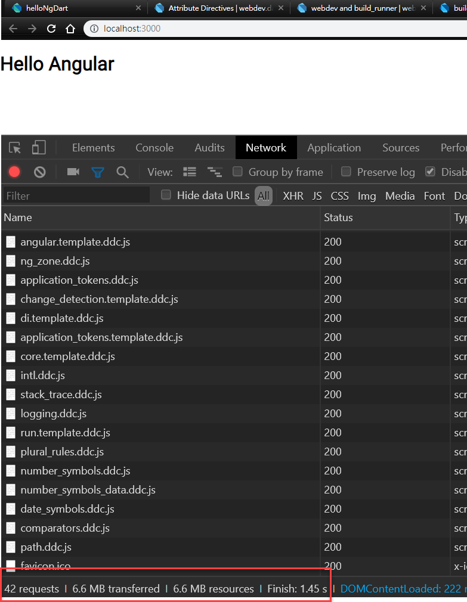
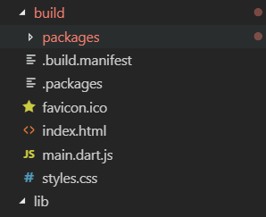
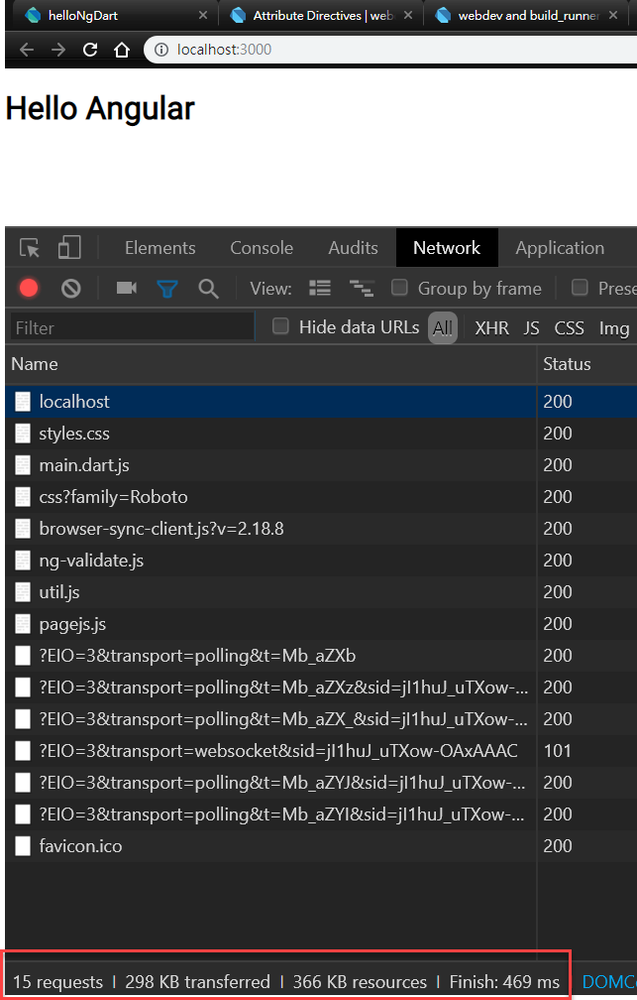

Angular 除了常見的 TypeScript 版本，其實還又另外一個 Dart 語言的版本，雖然是不同的團隊維護，但是基本概念是一樣的，因為最近開始在碰 Flutter，當然也要來玩一下 Angular Dart 了。
環境設定
首先，要先將 Dart 語言的環境設定起來，雖然編輯器沒有限定，官方推薦使用 webstorm，而我本身是使用 VSCode 做開發。Anyway，先來安裝 Dart SDK
安裝 Dart SDK
支援的作業系統有 Windows、Linux、Mac，因為我目前的環境是 Windows，所以我就先以 Windows 的環境為文章的設定環境
1 | choco install dart-sdk |
- choco 是一套 windows 上的套件管理工具，詳細資訊可以參閱官網
如果原本已經有安裝 Dart ，想要升級的話
1 | choco upgrade dart-sdk |
Dart SDK 內容
安裝完 Dart SDK 後，在開發環境會擁有以下的工具
- dart: The standalone VM
- dart2js: The Dart-to-JavaScript compiler (used only for web development)
- dartanalyzer: The static analyzer
- dartdevc: The Dart development compiler (used only for web development)
- dartdoc: The API documentation generator
- dartfmt: The Dart code formatter
- pub: The Dart package manager
安裝 CLI Tools
打開命令視窗，分別執行下列的指令，會將 webdev 和 stagehand 這兩套工具安裝起來
1 | pub global activate webdev |
VSCode 安裝擴充套件
- 可安裝 Dart 套件，讓 VS Code 支援 Dart 語言的開發
第一個 Hello World
在還沒有正式進入 Angular Dart 之前，先簡單來一個 Web Dart 版本的 Hello World，首先，我們先將開發專案的環境建構出來
- 建立專案資料夾:
mkdir helloNgDart
- 進入資料夾
cd helloNgDart
- 使用剛剛安裝的 CLI 工具來初始化環境
stagehand web-simple
- 安裝相依套件
pub get
- 啟動 webdev server，開啟網頁
http://localhost:8080，即可看到第一個 Dart 網頁webdev serve- 
- 當看到上圖時，就表示使用 Dart 開發 Web 的環境已經準備好了
第一個 Angular Dart 網頁
安裝 Angular 套件
Angular Dart 要如何安裝呢? 很簡單，只需要在 pubspec.yaml 內，將 angular: ^5.0.0 放在 dependencies 下
1 | name: helloNgDart |
當將 angular: ^5.0.0 加入到 pubspec.yaml 時，編輯器工具會在背景安裝此套件
撰寫 AngularDart
-
將
web資料夾下的 index.html 檔案修改一下，- 將
<app-root></app-root>放到<body>區塊中 - 新增
<base href...>標籤
- 將
-
修改
main.dart檔案，先移除既有的程式碼，改寫成下列程式碼1
2
3
4
5
6
7import 'package:angular/angular.dart';
import 'package:helloNgDart/app_component.template.dart' as ng;
void main() {
runApp(ng.AppComponentNgFactory);
}目前這階段，編輯器會提示第二行的 import 找不到，這問題之後會被修正掉
import 'package:<pubspec 內設定的 name 值>/<檔案名稱>'- 預設會指到
lib資料夾
-
新增
lib資料夾並建立app_component.dart檔案 -
app_component.dart檔案內容1
2
3
4
5
6
7
8
9
10import 'package:angular/angular.dart';
(
selector: 'my-app',
template: '<h1>Hello {{name}}</h1>',
)
class AppComponent {
var name = 'Angular';
} -
重新執行
webdev serve後開啟網頁http://localhost:8080，應可以看到以下的畫面
-
如果能看到畫面，恭喜，Angular Dart 的開發環境也設定完成了
部署
如果想要將 Angular Dart 輸出成可以部署的狀態時，又該如何處理，這部分也可以透過指令來完成
webdev build --no-release --output web:build
- –no-release : 會輸出成開發狀態的檔案， 檔案數量會很多且檔案很大。
要輸出成 production mode ，將 --no-release 的參數拿掉即可，當拿掉參數時， webdev build 將使用 dart2js 的方式建置專案。如果想要額外設定 dart2js (dart2js 有自己的參數可以設定)，需要額外新增 build.yaml 檔案，並將相關設定檔案設定在裡面
1 | targets: |
比較輸出結果
-
with
--no-release

-
without
--no-release

Conclusion
Angular Dart 因為所使用語言的關係，可以享受到一些 TypeScript 所沒有提供的，但也由於是不同語言開發的，即使有 90% 的觀念相同，仍需要針對差異的部份去做了解，但那部份就留在以後分享了